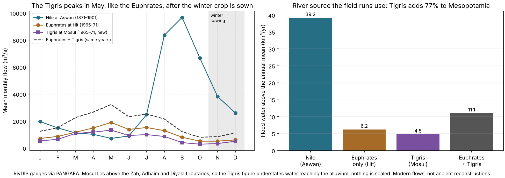
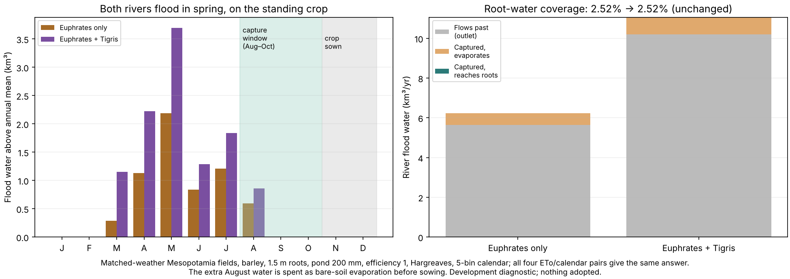
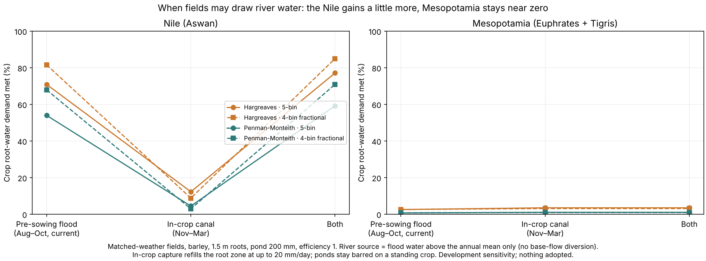
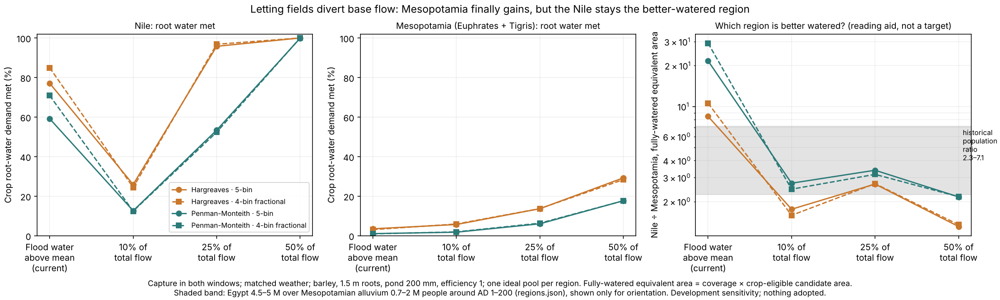

EARTH EVIDENCE · 14 NOVEMBER 2026
Tigris, capture season and base flow
Three declared development steps on the field-water model. The Tigris is added to Mesopotamia; then the season in which fields may draw river water; then whether they may divert base flow. Only the last moves Mesopotamia much, and the Nile stays the better-watered region throughout. Water diagnostics only: no harvest, population or settlement change.
1. The Tigris joins the flood inputs
RivDIS Tigris at Mosul qualifies on the Euphrates gauge rules: the same six complete years (1965–67, 1969–71), a May peak, and 4.82 km³/yr of flood water above its mean. Pooled with the Euphrates: 11.05 km³/yr against 6.24. Baghdad has only three complete years and stays unscored. Mosul lies above the Zab, Adhaim and Diyala, so the Tigris is understated; nothing is scaled.


In the field run root water does not change: both rivers flood in spring, after the declared capture window, so the extra water flows past or evaporates before sowing.
2. When fields may draw river water
Capture before sowing (current), during the standing crop (canal-style refilling of the root zone), or both. The Nile gains 3–6 points; Mesopotamia at most about one. No capture season inflates Mesopotamia.

| Region | Calendar | Reference ET | Capture window | Root water met | Delivered km³ |
|---|
| Nile | 5-bin | Hargreaves | Pre-sowing (Aug–Oct) | 70.83% | 22.35 |
| Nile | 5-bin | Hargreaves | In-crop canal | 12.25% | 1.09 |
| Nile | 5-bin | Hargreaves | Both windows | 77.12% | 23.30 |
| Nile | 5-bin | Penman-Monteith | Pre-sowing (Aug–Oct) | 53.93% | 27.96 |
| Nile | 5-bin | Penman-Monteith | In-crop canal | 4.44% | 1.09 |
| Nile | 5-bin | Penman-Monteith | Both windows | 59.18% | 29.02 |
| Nile | 4-bin fractional | Hargreaves | Pre-sowing (Aug–Oct) | 81.52% | 22.73 |
| Nile | 4-bin fractional | Hargreaves | In-crop canal | 8.78% | 0.55 |
| Nile | 4-bin fractional | Hargreaves | Both windows | 84.97% | 23.19 |
| Nile | 4-bin fractional | Penman-Monteith | Pre-sowing (Aug–Oct) | 67.85% | 28.50 |
| Nile | 4-bin fractional | Penman-Monteith | In-crop canal | 2.93% | 0.55 |
| Nile | 4-bin fractional | Penman-Monteith | Both windows | 70.90% | 29.03 |
| Mesopotamia | 5-bin | Hargreaves | Pre-sowing (Aug–Oct) | 2.52% | 0.86 |
| Mesopotamia | 5-bin | Hargreaves | In-crop canal | 3.49% | 1.15 |
| Mesopotamia | 5-bin | Hargreaves | Both windows | 3.49% | 2.01 |
| Mesopotamia | 5-bin | Penman-Monteith | Pre-sowing (Aug–Oct) | 0.67% | 0.86 |
| Mesopotamia | 5-bin | Penman-Monteith | In-crop canal | 1.05% | 1.15 |
| Mesopotamia | 5-bin | Penman-Monteith | Both windows | 1.05% | 2.01 |
| Mesopotamia | 4-bin fractional | Hargreaves | Pre-sowing (Aug–Oct) | 2.60% | 0.86 |
| Mesopotamia | 4-bin fractional | Hargreaves | In-crop canal | 3.08% | 0.57 |
| Mesopotamia | 4-bin fractional | Hargreaves | Both windows | 3.08% | 1.43 |
| Mesopotamia | 4-bin fractional | Penman-Monteith | Pre-sowing (Aug–Oct) | 0.73% | 0.86 |
| Mesopotamia | 4-bin fractional | Penman-Monteith | In-crop canal | 0.93% | 0.57 |
| Mesopotamia | 4-bin fractional | Penman-Monteith | Both windows | 0.93% | 1.43 |
3. Whether fields may divert base flow
The river source is either flood water above the annual mean (current) or a fixed share of total monthly flow. This is the first change that moves Mesopotamia substantially, up to 18–29% at half the flow, but the Nile saturates first. The grey band in the right panel is the historical Egypt/Mesopotamia population ratio, shown only for orientation.

32 base-flow runs
| Region | Calendar | Reference ET | Source rule | Root water met | Fully-watered equivalent km² | Delivered km³ |
|---|
| Nile | 5-bin | Hargreaves | Flood water above mean | 77.12% | 18,891 | 23.30 |
| Nile | 5-bin | Penman-Monteith | Flood water above mean | 59.18% | 14,498 | 29.02 |
| Nile | 4-bin fractional | Hargreaves | Flood water above mean | 84.97% | 20,814 | 23.19 |
| Nile | 4-bin fractional | Penman-Monteith | Flood water above mean | 70.90% | 17,368 | 29.03 |
| Nile | 5-bin | Hargreaves | 10% of total flow | 25.91% | 6,347 | 9.38 |
| Nile | 5-bin | Penman-Monteith | 10% of total flow | 12.61% | 3,089 | 9.38 |
| Nile | 4-bin fractional | Hargreaves | 10% of total flow | 24.41% | 5,980 | 9.23 |
| Nile | 4-bin fractional | Penman-Monteith | 10% of total flow | 12.42% | 3,043 | 9.23 |
| Nile | 5-bin | Hargreaves | 25% of total flow | 95.78% | 23,464 | 23.45 |
| Nile | 5-bin | Penman-Monteith | 25% of total flow | 53.39% | 13,079 | 23.45 |
| Nile | 4-bin fractional | Hargreaves | 25% of total flow | 96.83% | 23,721 | 23.08 |
| Nile | 4-bin fractional | Penman-Monteith | 25% of total flow | 52.35% | 12,824 | 23.08 |
| Nile | 5-bin | Hargreaves | 50% of total flow | 100.00% | 24,497 | 28.46 |
| Nile | 5-bin | Penman-Monteith | 50% of total flow | 99.90% | 24,473 | 37.58 |
| Nile | 4-bin fractional | Hargreaves | 50% of total flow | 100.00% | 24,497 | 27.39 |
| Nile | 4-bin fractional | Penman-Monteith | 50% of total flow | 100.00% | 24,497 | 36.64 |
| Mesopotamia | 5-bin | Hargreaves | Flood water above mean | 3.49% | 2,233 | 2.01 |
| Mesopotamia | 5-bin | Penman-Monteith | Flood water above mean | 1.05% | 669 | 2.01 |
| Mesopotamia | 4-bin fractional | Hargreaves | Flood water above mean | 3.08% | 1,968 | 1.43 |
| Mesopotamia | 4-bin fractional | Penman-Monteith | Flood water above mean | 0.93% | 594 | 1.43 |
| Mesopotamia | 5-bin | Hargreaves | 10% of total flow | 5.65% | 3,617 | 2.93 |
| Mesopotamia | 5-bin | Penman-Monteith | 10% of total flow | 1.77% | 1,133 | 2.93 |
| Mesopotamia | 4-bin fractional | Hargreaves | 10% of total flow | 5.91% | 3,780 | 2.63 |
| Mesopotamia | 4-bin fractional | Penman-Monteith | 10% of total flow | 1.93% | 1,235 | 2.63 |
| Mesopotamia | 5-bin | Hargreaves | 25% of total flow | 13.65% | 8,733 | 7.32 |
| Mesopotamia | 5-bin | Penman-Monteith | 25% of total flow | 6.02% | 3,851 | 7.32 |
| Mesopotamia | 4-bin fractional | Hargreaves | 25% of total flow | 13.71% | 8,771 | 6.58 |
| Mesopotamia | 4-bin fractional | Penman-Monteith | 25% of total flow | 6.33% | 4,050 | 6.58 |
| Mesopotamia | 5-bin | Hargreaves | 50% of total flow | 29.26% | 18,720 | 14.65 |
| Mesopotamia | 5-bin | Penman-Monteith | 50% of total flow | 17.68% | 11,316 | 14.65 |
| Mesopotamia | 4-bin fractional | Hargreaves | 50% of total flow | 28.36% | 18,145 | 13.16 |
| Mesopotamia | 4-bin fractional | Penman-Monteith | 50% of total flow | 17.65% | 11,294 | 13.16 |